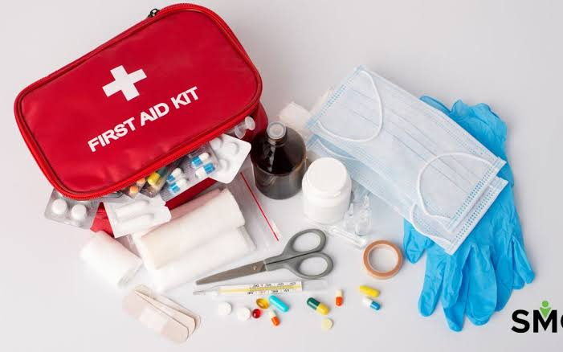
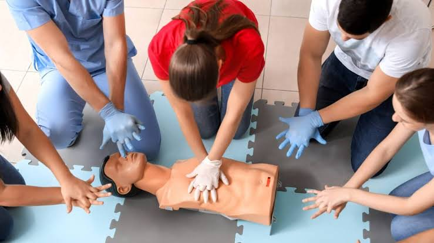
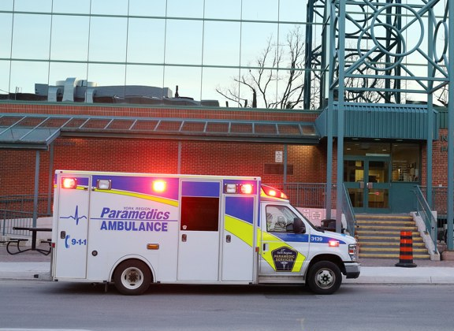

Live
Translation
Two-way speech in 15+ languages, so language is never the reason help arrives late.
AidLive talks an untrained
bystander through the first
critical minutes.
Guided protocols
Languages spoken
To first instruction
Why AidLive
Point a camera. Speak in any language. AidLive reads the scene, matches it against vetted first-aid protocols, and says the next step out loud — one action at a time.
It never rushes and never guesses. When the situation is beyond first aid, it says so, and hands the dispatcher a clean summary of everything that happened.
How It Works



Point your camera at the scene. AidLive describes what it sees and asks only the questions that change what you do next.
Speak in whatever language comes out under stress. AidLive understands it and answers back in that same language, out loud.
One instruction at a time, spoken and shown — with an image marking exactly where on the body it applies.
A concise summary — condition, actions taken, location, timeline — ready to read aloud the moment a dispatcher picks up.
Built For The Worst Minute
Two-way speech in 15+ languages, so language is never the reason help arrives late.
Reads the scene for visible signs and relays what it sees in plain language.
Shown and narrated at once, so you never look away from the patient to read.
Every detail captured while you were busy, condensed into one readable paragraph.
Important
Always call your local emergency number first. AidLive is built to keep a bystander useful while professional help is on its way — it defers to a dispatcher or clinician every time.
Start Now
No account, no setup. The assistant starts listening the moment you open it.
Start Emergency SessionOpens the live assistant. Camera and microphone permission is requested on the next screen.
Contact
Questions about protocols, accessibility, or bringing AidLive to your organisation — send a note.